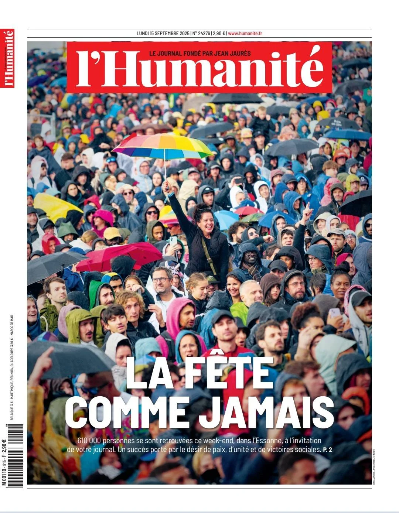
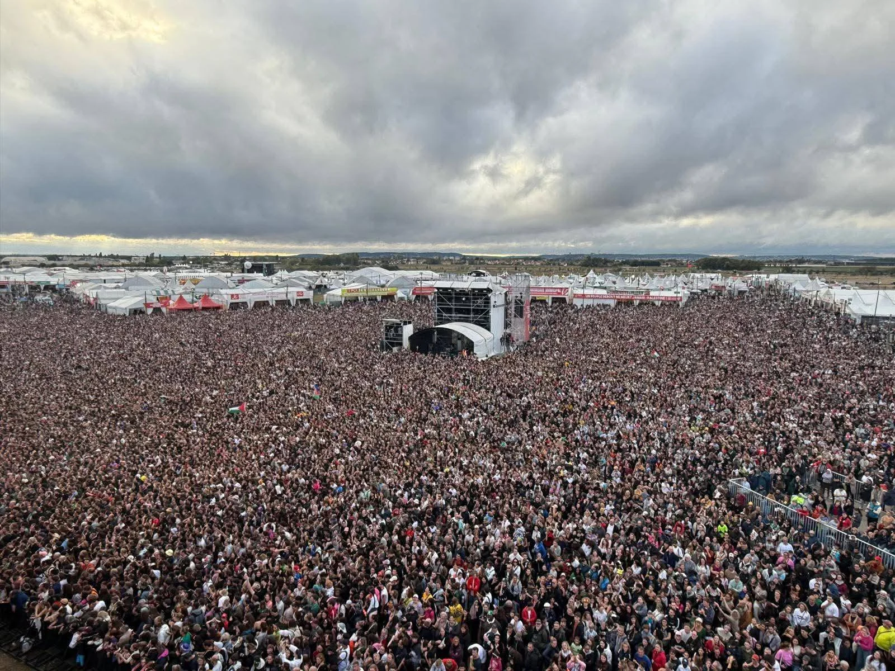

Compte rendu
La Fête de l’Humanité 2025, une fête populaire portée par les bénévoles
Date indiquée par Facebook · 15 septembre 2025
Repères éditoriaux
Nous avons salué les camarades qui ont fait vivre la Fête de l’Humanité. Le partage reprend le chiffre de 610 000 participants annoncé à l’issue de l’édition 2025 et conserve la une du quotidien.
Texte conservé avec la publication
Un record pour la Fête de l'Humanité
610.000 participants pour cette édition historique de la Fête de l'Humanité.
Bravo aux militants communistes qui ont porté cette belle fête populaire.


Sources
Archive rouge · export Facebook · AR-0002-FB-01017
À lire aussi · L’ouverture de la 90e Fête de l’Humanité